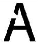
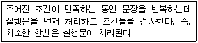
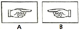

웹디자인기능사 (2012-07-22 기출문제)
1과목: 디자인 일반
1. 커뮤니케이션 디자인에 대한 설명으로 틀린 것은?
- 라틴어 ‘Communicate'를 어원으로 한다.
- 두 개 이상의 개체가 기호를 매개로 무언가를 공유하는 것이다.
- 운동과 시선을 중시하는 디자인이다.
- 사람과 사람 사이에 기호에 의해서 의미를 전달하는 과정이다.
(정답률: 88%)

2. 색료 혼합의 3원색인 자주(M), 노랑(Y), 청록(C)의 색료 혼합 결과가 틀린 것은?
- 자주(M) + 노랑(Y) = 빨강(R)
- 노랑(Y) + 청록(C) = 초록(G)
- 자주(M) + 청록(C) = 파랑(B)
- 자주(M) + 노랑(Y) + 청록(C) = 흰색(W)
(정답률: 86%)
3. 명도가 낮아 움츠린 느낌을 주는 색을 무엇이라 하는가?
- 진출색
- 후퇴색
- 수축색
- 팽창색
(정답률: 85%)
4. 점, 선, 면 등이 연장되거나 발전, 변화되는 밀접한 관계에서 이루어지는 조형디자인 요소는?
- 형태
- 색채
- 크기
- 질감
(정답률: 91%)
5. 디자인 원리 중 동질의 부분이 조합될 때 이루어지는 것은?
- 유사
- 유도
- 우연
- 관계
(정답률: 88%)
6. 시각적 질감의 예로 성격이 다른 하나는?
- 사진의 망점
- 인쇄상의 스크린 톤
- 나뭇결 무늬
- 텔레비전 주사선
(정답률: 86%)
7. 컬러TV, 조명등에 활용되는 혼합방식은?
- 감산 혼합
- 가산 혼합
- 계시가법 혼합
- 중간 혼합
(정답률: 83%)
8. 디자인(Design)의 의미를 설명한 것으로 틀린 것은?
- 디자인이란 프랑스어로 ‘데셍’에서 유래되었다.
- 도안, 밑그림, 그림, 소묘, 계획, 설계, 목적이란 의미를 기술하고 있다.
- 디자인은 De(이탈)와 Sign(형상)의 합성어로 기존 것을 파괴하고 새로운 재화를 창출한다는 의미가 포함된다.
- 디자인은 기존의 것을 유지하며 실용적 가치보다는 예술적 가치의 기준을 말한다.
(정답률: 73%)
9. 두 개 이상의 요소 사이에서 부분과 부분 또는 전체 사이에 시각상 힘의 안정을 주면 안정감을 명쾌한 감정을 느끼게 하는 디자인 원리는?
- 균형
- 조화
- 비례
- 율동
(정답률: 56%)
10. 저드(D. Judd)의 색채 조화의 원리에 해당하지 않는 것은?
- 질서의 원리
- 유사의 원리
- 친근감의 원리
- 기호의 원리
(정답률: 78%)
11. 일반적인 디자인의 조건을 나열한 것으로 옳은 것은?
- 합목적성, 유행성, 질서성, 독창성
- 합목적성, 심미성, 독창성, 경제성
- 합목정성, 심미성, 경제성, 국제성
- 합목정성, 창조성, 심미성, 질서성
(정답률: 90%)
12. 다음 중 나머지 세 가지와 성격이 다른 디자인 분야는?
- 인테리어 디자인
- 광고 디자인
- 편집 디자인
- 시각 디자인
(정답률: 80%)
13. 먼셀의 무채색 11단계 중 중간 명도에 해당하는 단계는?
- 0~3
- 4~6
- 7~8
- 9~10
(정답률: 85%)
14. 물체의 표면이 가지고 있는 특징의 차이를 시각과 촉각을 통하여 느낄 수 있는 성질을 의미하는 것은?
- 색감
- 항상성
- 고유성
- 질감
(정답률: 88%)
15. 데 스틸(De Stijl)에 관한 설명으로 옳지 않은 것은?
- 네덜란드를 중심으로 한 신조형 운동으로 요소주의라고도 불리운다.
- 두스부르크, 몬드리안, 리트벨트 등이 주요 인물이다.
- 바우하우스의 조형사상에 큰 영향을 주었다.
- 현대의 조형 활동은 자연세계를 상징하고 표현하는데 중점을 두어야 한다고 생각하였다.
(정답률: 52%)
16. 인간의 의사 및 정보를 시각적으로 전달하는 디자인 영역은?
- 제품디자인
- 환경디자인
- 시각디자인
- 공예디자인
(정답률: 94%)
17. 다음 그림과 같이 일부분이 끊어진 상태이지만 문자로 인식되는 것은 어떤 원리 때문인가?

- 대칭성
- 유사성
- 폐쇄성
- 연속성
(정답률: 80%)
18. 서로 다른 색끼리의 영향으로 원래의 색보다 색상의 차이가 더욱 크게 느껴지는 것은?
- 한란 대비
- 명도 대비
- 채도 대비
- 색상 대비
(정답률: 66%)
19. 디자인 원리 중 율동(rhythm)의 요소와 거리가 먼 것은?
- 대비
- 점증
- 반복
- 변칙
(정답률: 67%)
20. 색채조화의 공통원리에 관한 설명으로 틀린 것은?
- 질서의 원리는 효과적인 반응을 일으키는 질서 있는 계획에 따라 선택된 색채들에서 생긴다.
- 비모호성의 원리는 두 색 이상의 배색에 있어서 모호함이 없는 명료한 배색에서만 얻어진다.
- 동류의 원리는 가장 가까운 색채끼리의 배색은 보는 사람에게 친근감을 주며 조화를 느끼게 한다.
- 대비의 원리는 배색된 색채들이 서로 공통되는 상태와 속성을 가질 때 그 색채는 조화된다.
(정답률: 68%)
2과목: 인터넷 일반
21. 자바스크립트의 내장 함수 중 수식으로 되어 있는 문자열을 계산하여 실수로 변환해주는 함수는?
- confirm()
- alert()
- eval()
- parseFloat()
(정답률: 47%)
22. 인터넷 익스플로러 6.0의 [편집] 메뉴에 포함되지 않은 것은?
- 잘라내기
- 이 페이지에서 찾기
- 모두 선택
- 새로고침
(정답률: 64%)
23. 웹 페이지 제작 시 고려해야 할 사항으로 거리가 먼 것은?
- 아무리 좋은 내용을 담고 있는 웹 페이지라 해도 디자인이 산만하면 사용자가 보기 불편하다.
- 텍스트 위주로만 웹 페이지를 제작하여 접속이 원활하도록 한다.
- 배경색과 문자 색상을 고려하여 가독성을 높일 수 있도록 해야 한다.
- 웹 디자인의 일관성을 유지하면서 동시에 사용성을 높여야 한다.
(정답률: 89%)
24. 사용자가 웹 서버로부터 보내진 하이퍼텍스트 문서를 볼 수 있게 해주는 프로그램으로 멀티미디어 데이터의 재생과 하이퍼미디어 기능을 지원하는 것은?
- 웹브라우저
- 플러그 인
- 플래시
- 매크로미디어
(정답률: 68%)
25. 웹 문서의 각종 서비스를 제공하는 서버들에 있는 파일의 위치를 표시해 주는 표준은?
- URL
- IP
- TCP
- HTML
(정답률: 71%)
26. 다음 중 최초의 GUI 환경의 웹 브라우저는?
- 익스플로러
- 네스케이프
- 모자이크
- 랜드스케이프
(정답률: 69%)
27. 네트워크상의 보안을 강화하기 위한 방법으로 거리가 먼 것은?
- 공용(public) IP 주소만을 이용한 보안
- 방화벽(firewall)을 통한 보안
- 프록시(proxy) 서버를 통한 보안
- 암호화(encryption)를 통한 보안
(정답률: 82%)
28. 자바스크립트로 배경색을 초록색으로 지정하려면 다음 중 어떤 문장을 사용해야 하는가?
- window.bgColor=""green";
- window.background="green";
- document.bgColor="green";
- document.background="green";
(정답률: 64%)
29. 인터넷 익스플로러 6.0에서 [도구]-[인터넷 옵션]-[내용] 탭에서 설정할 수 있는 것은?
- 쿠키 편집
- 언어 추가
- 인증서
- HTML 편집
(정답률: 61%)
30. 다음 설명에 해당하는 자바스크립트 제어문은?

- switch
- for
- while
- do while
(정답률: 62%)
31. HTML에서 ＜hr＞ 태그의 속성에 포함되지 않는 것은?
- size
- height
- noshade
- align
(정답률: 46%)
32. 국내 검색엔진(Search Engine)이 아닌 것은?(2012 기준 문제로 기존 정답은 4번입니다. 여기서는 4번을 누르면 정답 처리 됩니다. 자세한 내용은 해설을 참고하세요.)
- 엠파스
- 네이버
- 다음
- 야후
(정답률: 85%)
33. 다음 중 URL 형식에서 :// 앞에 오는 것은?
- 프로토콜
- IP주소
- 접속 포트번호
- 디렉터리명
(정답률: 84%)
34. 데이터 통신에서 결선 방식(토폴로지)을 분류할 때 하나의 전송 채널을 사용하며, 분산제어 처리 방식을 적용하며, 구조적으로 Point-To-Point 방식으로 T자형 네트워크를 구성하는 것은?
- 성형(Star)방식
- 링형(Ring)방식
- 버스형(Bus)방식
- 나무형(Tree)방식
(정답률: 57%)
35. 다음 중 웹 페이지 저작도구로 가장 알맞은 것은?
- 드림위버(Dreamweaver)
- 마야(Maya)
- 3D 스튜디오 맥스(3D Studio MAX)
- 소프트이미지(Soft Image)
(정답률: 86%)
36. 스팸 메일(spam mail)에 대한 설명으로 옳은 것은?
- 수신자의 허가 하에 전달되는 전자 우편을 말한다.
- 사용자 그룹의 구성원을 가리키는 수단으로 사용되는 대체명이다.
- 불특정 다수의 사람에게 일방적으로 전달되는 대량의 광고성 전자 우편을 말한다.
- 어떤 그룹에 소속된 사람들에게 정기적으로 메시지를 보내는 전자 우편을 말한다.
(정답률: 89%)
37. 컴퓨터그래픽의 역사에 대한 설명으로 옳은 것은?
- 제5세대 - 멀티미디어 활성화
- 제4세대 - 트랜지스터의 개발
- 제3세대 - 에니악의 탄생
- 제2세대 - 대규모 집적회로의 개발 시기
(정답률: 72%)
38. 자바스크립트의 연산자가 아닌 것은?
- |, ||
- &, &&
- >>, >>>
- <<, <<<
(정답률: 60%)
39. 웹 서버에서 동작하고, 클라이언트의 요청에서 따라 데이터를 가공하여 새로운 결과 문서를 반환하는데 사용되는 스크립트 언어가 아닌 것은?
- ASP
- JSP
- PHP
- XML
(정답률: 67%)
40. 연산자 좌우의 검색어를 모두 포함하는 데이터를 찾는 정보검색 연산자는?
- OR
- NOT
- AND
- AND NOT
(정답률: 75%)
3과목: 웹그래픽스 디자인
41. 웹 페이지 내에 애니메이션 장면이나 움직이는 이미지 광고를 삽입하고자 할 때 사용할 때 프로그램으로 거리가 먼 것은?
- Flash
- Image Ready
- Director
- CorelDraw
(정답률: 52%)
42. 다음 중 애니메이션에 대한 설명으로 틀린 것은?
- 움직임이 없는 그림이나 사진 등에 생명이 있는 움직임을 부여하는 기술이다.
- 라틴어의 아니마투스(Animatus)에서 유래되었다.
- 연속된 그림을 통하여 계속 이어지게 보이는 2차원만의 영역을 의미한다.
- 애니메이션에서 사용되는 프레임은 낱개의 정지된 이미지를 말한다.
(정답률: 79%)
43. 다음 중 GIF 파일 포맷의 설명으로 틀린 것은?
- 이미지의 일부분을 투명하게 만들 수 있다.
- 1670만 가지의 색상을 인덱스색상으로 사용할 수 있다.
- 애니메이션 효과를 만들 수 있다.
- 이미지가 점진적으로 나타나는 Interlace 효과를 낼 수 있다.
(정답률: 66%)
44. 다음 중 웹사이트 내비게이션 구조(Navigation Structure)의 유형에 해당하지 않는 것은?
- Protocol structure
- Grid structure
- Hierarchical structure
- Sequential structure
(정답률: 57%)
45. 다음 중 2D 그래픽에 대한 설명으로 틀린 것은?
- 종이나 컴퍼스에 붓과 물감으로 그림을 그리는 개념이다.
- 주로 물체의 입체감을 표현하는데 가장 많이 쓰인다.
- 정지화상의 수정과 창조를 할 수 있다.
- 사진들을 합성하는 작업도 포함된다.
(정답률: 77%)
46. 다음 중 웹 사이트 디자인 프로세스의 순서를 옳게 나열한 것은?
- 사이트 맵 그리기 → 기본디자인 구상하기 → 컨셉 정하기 → 세부디자인 구상하기
- 사이트 맵 그리기 → 컨셉 정하기 → 기본디자인 구상하기 → 세부디자인 구상하기
- 컨셉 정하기 → 기본디자인 구상하기 → 세부디자인 구상하기 → 사이트 맵 그리기
- 컨셉 정하기 → 사이트 맵 그리기 → 기본디자인 구상하기 → 세부디자인 구상하기
(정답률: 56%)
47. 타이포그래피의 구성요소에 해당하지 않는 것은?
- Serif
- Line-spacing
- Letter-spacing
- Texturing
(정답률: 60%)
48. 일반적으로 원본 이미지를 각각 BMP, JPG, PNG 파일 포맷으로 저장하였을 경우 파일용량의 크기를 바르게 비교한 것은?
- BMP>JPG>PNG
- BMP>PNG>JPG
- PNG>BMP>JPG
- PNG>JPG>BMP
(정답률: 57%)
49. 웹 스타일 방식 가운데 기업이미지의 일관성을 유지하면서 새로운 디자인으로 업그레이드 하는 것은?
- 픽셀아트 스타일
- 모던 스타일
- 아이덴티티 스타일
- 디지털 아트 스타일
(정답률: 76%)
50. 일반적으로 “해상도가 높다”라는 말의 의미로 틀린 것은?
- 이미지가 선명하다.
- 이미지 질(Quality)이 좋다.
- 이미지의 용량이 적다.
- 일정 단위의 크기에 많은 픽셀을 포함한다.
(정답률: 87%)
51. 다음은 PhotoShop CS3에서 제작한 것이다. A 이미지를 B 이미지로 만들기 위해 필요한 명령어는?

- Flip Horizontal
- Flip Vertical
- Rotate
- Scale
(정답률: 77%)
52. 다음 프로그램 중 벡터(Vector) 방식을 기반으로 하고 있지 않은 것은?
- 일러스트레이터
- 코렐드로우
- 프리핸드
- 포토샵
(정답률: 72%)
53. 디지털 카메라로 노을이 지는 사진을 찍어서 웹사이트에 올리려고 한다. 일반적으로 최적화시키기 위해 파일 용량을 줄이려면 어떤 포맷으로 압축해야 하는가?
- FLA
- PSD
- JPG
- EPS
(정답률: 81%)
54. 일반적으로 그레이스케일(Grayscale)의 최대 비트심도(bit depth)는 얼마인가?
- 1비트
- 2비트
- 8비트
- 16비트
(정답률: 64%)
55. 다음 중 웹컬러 디자인의 목적과 맞지 않는 것은?
- 연상적인 목적
- 레이아웃의 목적
- 심미적인 목적
- 상징적인 목적
(정답률: 70%)
56. 컴퓨터그래픽스 시스템의 입력 장치로 옳지 않은 것은?
- 빔 프로젝션
- 키보드
- 마우스
- 스캐너
(정답률: 83%)
57. 웹 페이지 제작 시 웹 사이트 사용의 편리함을 높이기 위한 것으로 옳지 않은 것은?
- 로딩 시간에 구애받지 않고 intro 페이지를 화려하게 넣어 보는 즐거움을 준다.
- 이미지는 저해상도를 기본으로 하고 사용자의 선택에 따라 고해상도의 정밀 사진을 링크한다.
- 링크에 대한 설명은 링크 타이틀을 활용하여 텍스트로 제공한다.
- 과도하게 정보를 제공(배치 혹은 나열)해서는 안 된다.
(정답률: 83%)
58. 다음 중 PNG 파일 포맷의 설명으로 틀린 것은?
- 압축 기법을 사용하지 않는 포맷으로 높은 이미지의 품질을 그대로 유지할 수 있다.
- GIF와 JPEG의 장점을 합친 포맷으로 무손실 압축을 사용한다.
- 8비트의 256컬러나, 24비트의 트루컬러를 선택하여 저장할 수 있어 효율적이다.
- 인터레이스 로딩기법과 디더링 옵션, 투명도를 지정할 수 있다.
(정답률: 51%)
59. 애니메이션 기법 중 축소형으로 입체 모델을 만들고 여기에 다른 기법을 병합하여 장면을 만드는 것은?
- 모핑 효과
- 로토스코핑 효과
- 미니어처 효과
- 페인팅 효과
(정답률: 75%)
60. 홈페이지의 해당 컨셉(concept)을 이끌어 내기 위해 종이에 최대한 많이 그려봄으로써 여러 가지 구성을 만들어 보는 디자인 실무의 초기 작업은?
- 브레인스토밍
- 콘텐츠디자인
- 벤치마킹
- 아이디어스케치
(정답률: 81%)